Most of the time our photos are plain. They rarely move people. A big reason is that the frame lacks a sense of story.
So what is a sense of story?
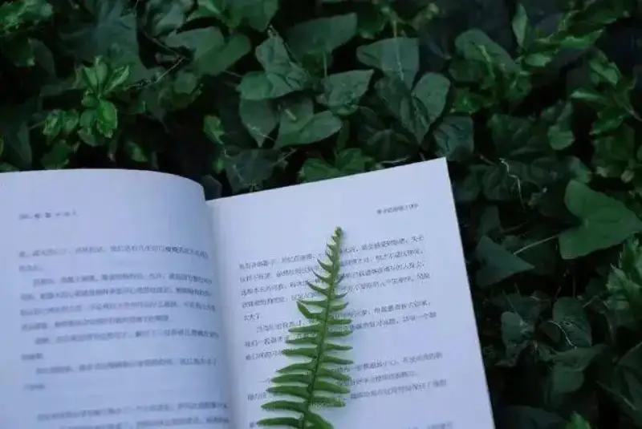
A sense of story means the feeling in a person, the story behind an object, and the links between people, or between a person and an object. The viewer can feel this link in the photo.
Below, let us talk about how to shoot works that have a sense of story.
The scene
1. Shoot old objects
Old objects are worn by time, and they are full of story on their own.
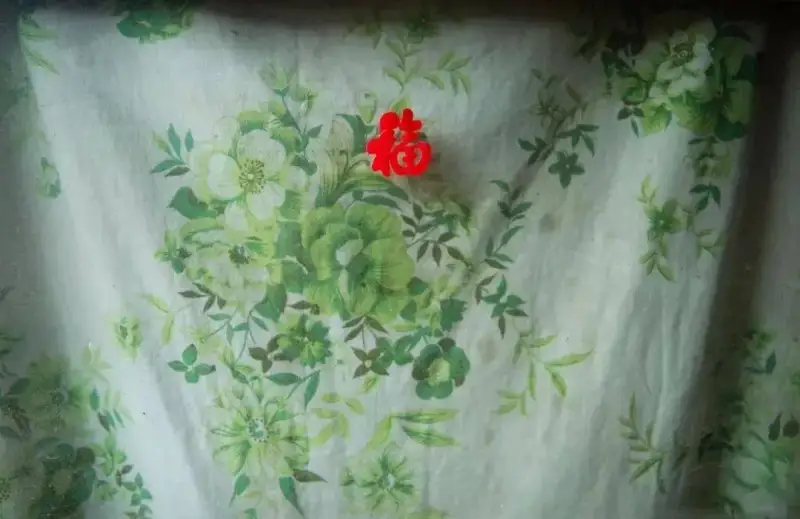
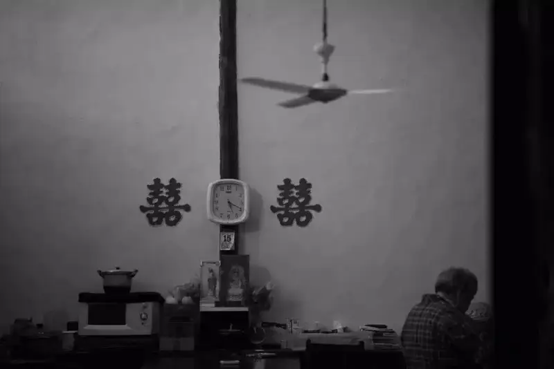
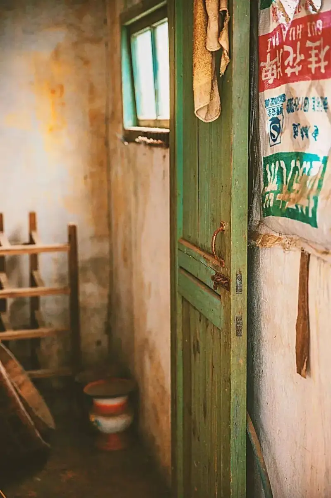
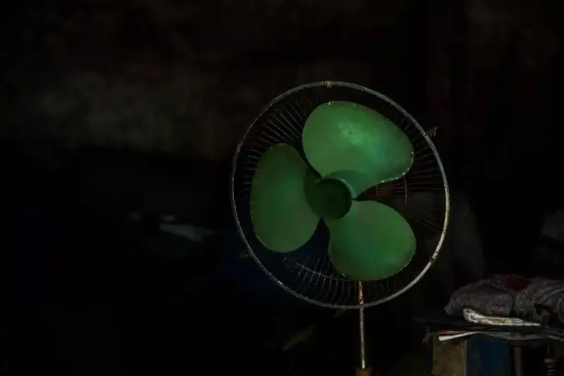
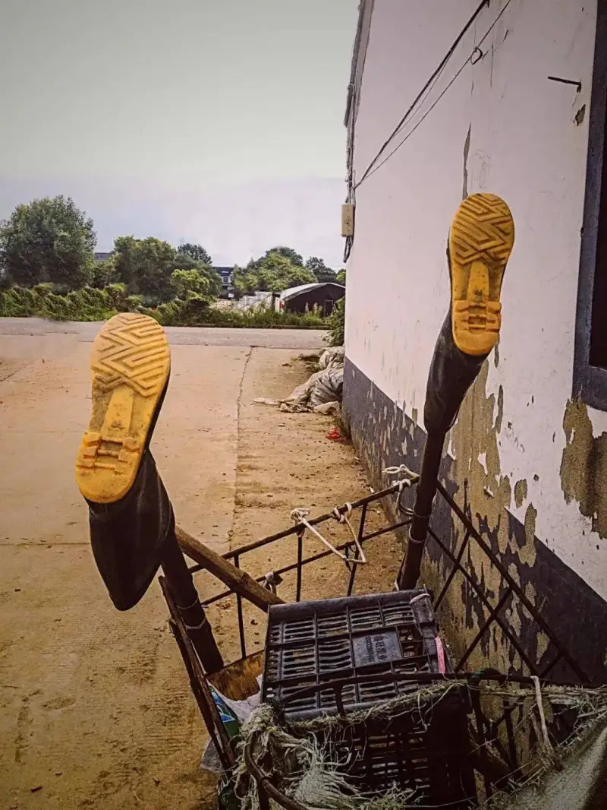
2. Strengthen blur and depth
You can use blur to build depth.
Take the photo below. The table in front and the ink bottle behind are both blurred. Only the pen in the middle stays sharp. This makes the picture hold the eye longer.
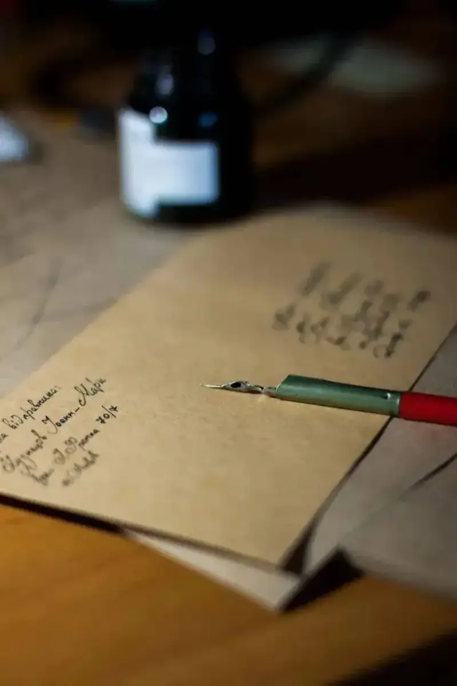
3. Use contrast
Contrast is a common composition method in photography, and it is easy to use. You can work with color, size, focus, light and dark, old and new, dense and sparse.
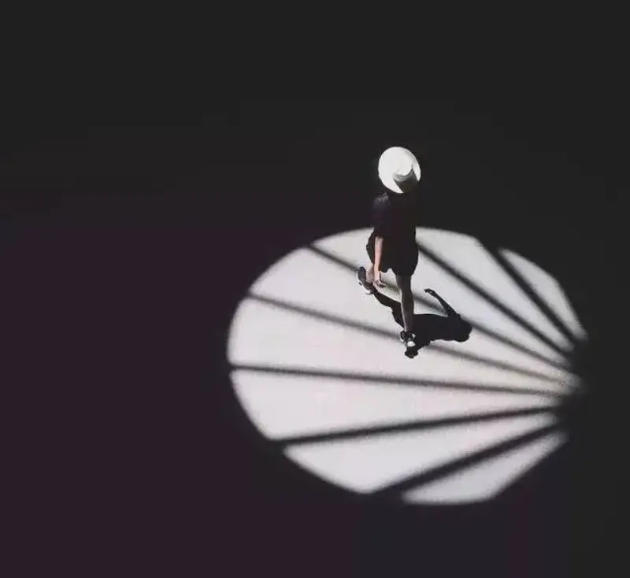
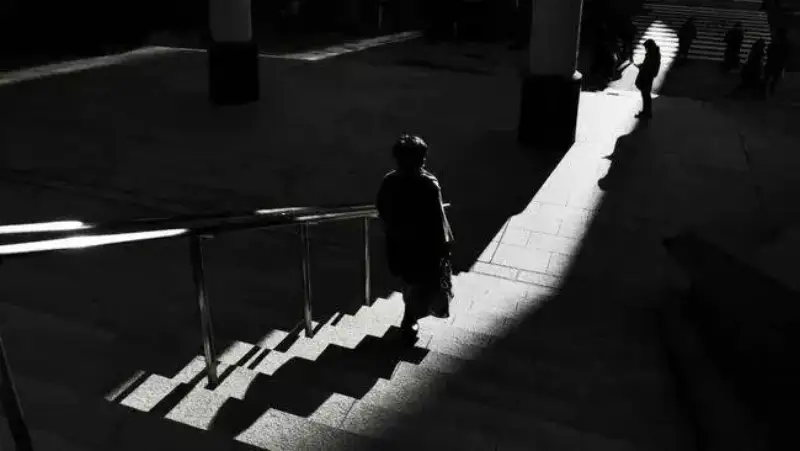
The person
1. The story of a back
A photo of a back easily builds a mood that asks the viewer to imagine. Such a photo carries a story on its own.
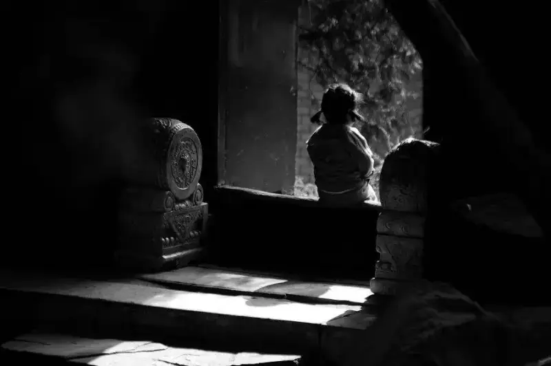
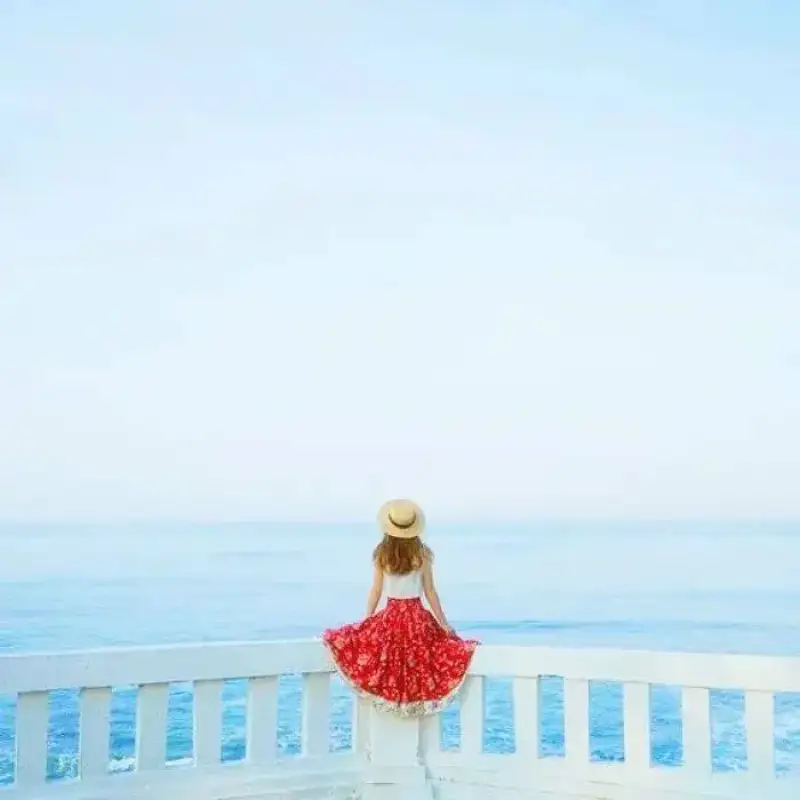
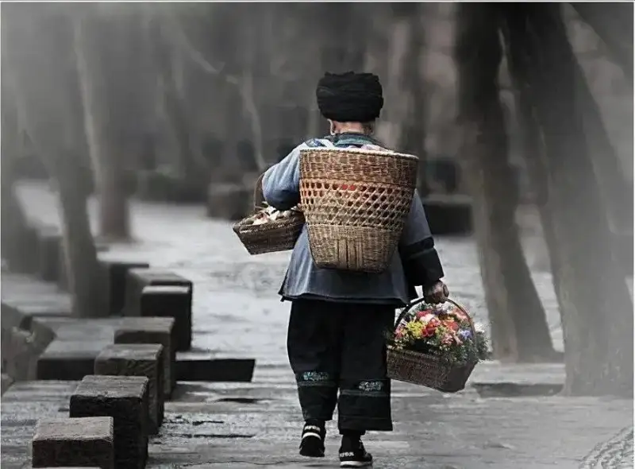
2. Shoot a part
Focus the lens on a part of a person. It is a subtle, restrained way to send emotion. It builds a sense of story through an open composition.
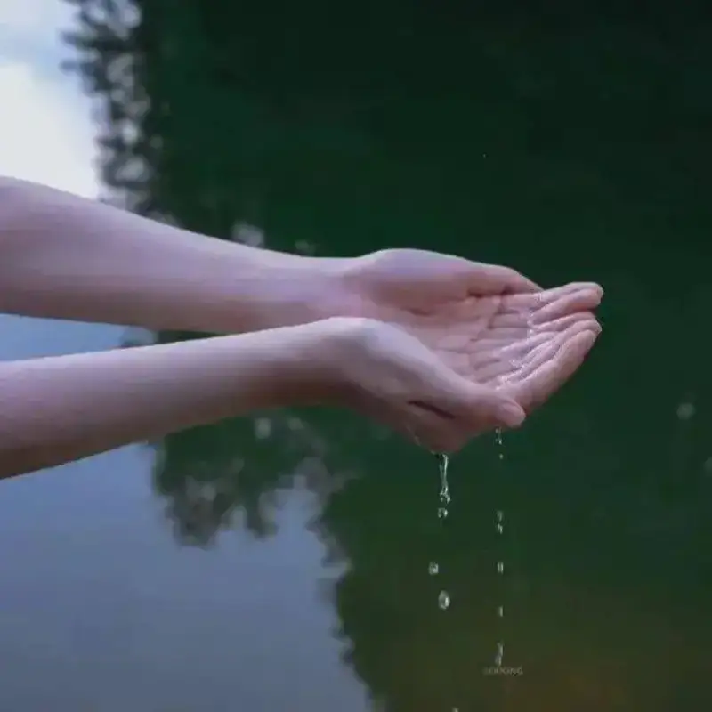
3. Shoot shadows
Black and white tones plus a shadow is a classic match.
When you shoot, the person can be in the frame, or only the person's shadow can be in the lens. The tension of the photo improves.
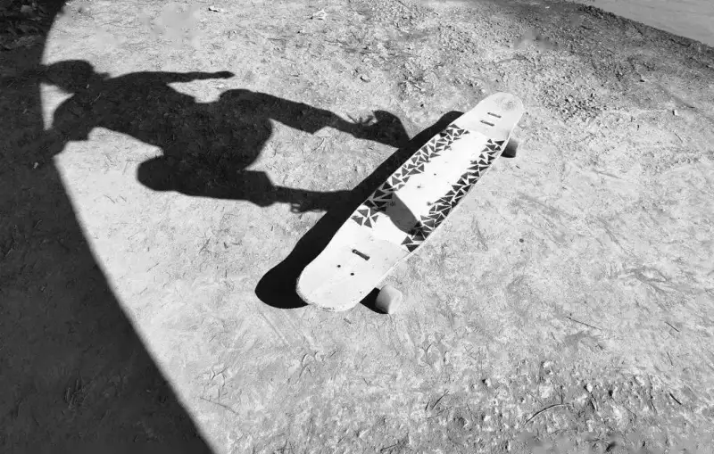
If you add contrast in color too, and let one bright tone appear among the light and shadow, the mood grows stronger.
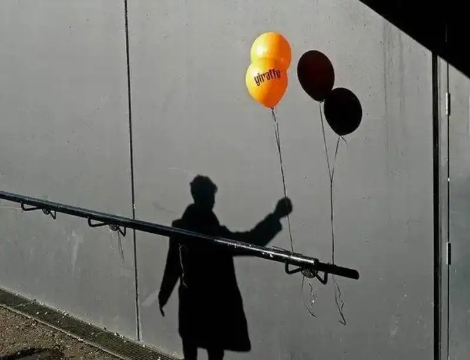
4. Person silhouettes
To give a person silhouette a sense of story, shoot the person from the side. The outline of the body is then the clearest.
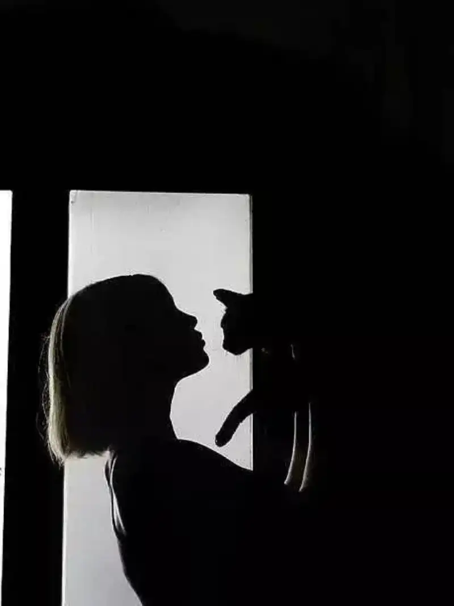